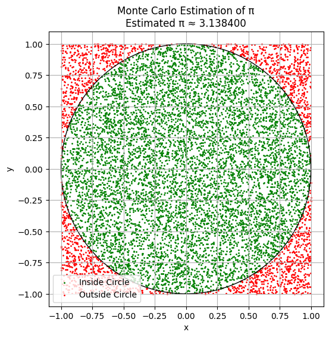
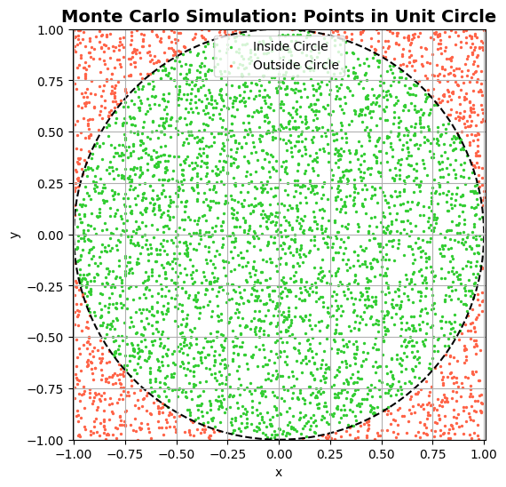
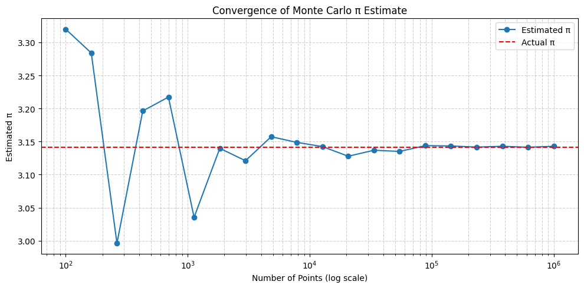
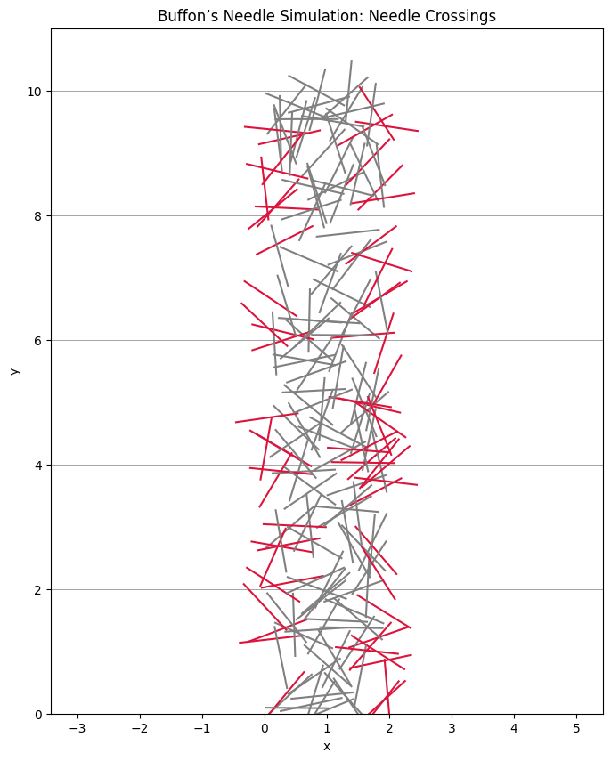
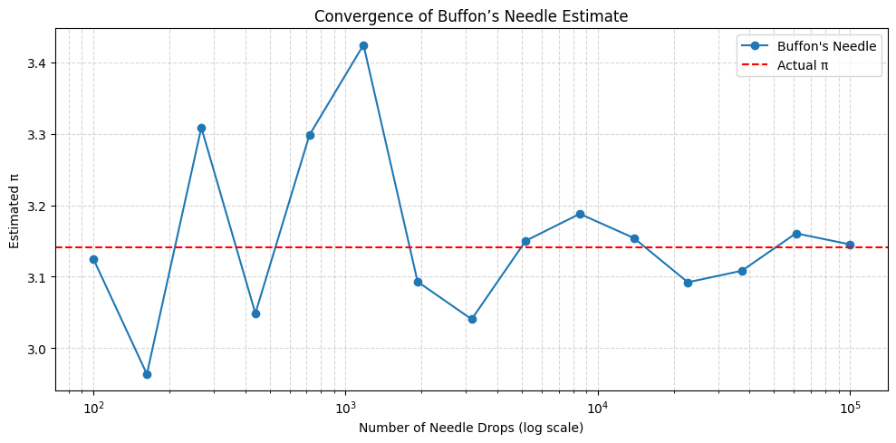

Part 1: Estimating π Using a Circle
1. Theoretical Foundation: Estimating π Using Random Points in a Circle
The Idea
Monte Carlo methods use random sampling to estimate values based on probability. To estimate \(\pi\), we can simulate a simple geometric setup: - A unit square with sides of length 1. - A quarter circle (or full circle) inscribed inside that square. - By randomly generating points in the square, we can compute the ratio of points that fall inside the circle. - This ratio helps us estimate \(\pi\) using geometry.
Step-by-Step Geometric Insight
Consider: - A unit circle centered at the origin \((0, 0)\), so the radius \(r = 1\). - A square bounding this circle, ranging from \((-1, -1)\) to \((1, 1)\). - Area of the circle: \(\pi r^2 = \pi \cdot 1^2 = \pi\). - Area of the square: \((2 \cdot r)^2 = 4\).
The theoretical ratio of the areas is:
If we randomly generate points in the square, the fraction that fall inside the circle should approach this ratio:
Estimating π
Solving for \(\pi\):
This estimate becomes more accurate as the number of points increases.
Part 2: Estimating π Using Buffon’s Needle
1. Theoretical Foundation: Buffon’s Needle Problem
What Is Buffon’s Needle?
Buffon’s Needle is a classic probability problem first posed by Georges-Louis Leclerc, Comte de Buffon in the 18th century. It shows how we can estimate the value of \(\pi\) using a purely geometric probability experiment.
The Setup
Imagine a floor with parallel lines spaced \(d\) units apart.
Now, suppose we randomly drop a needle of length \(L\) onto the floor. Some needles will cross one of the lines, and some won’t.
Key Assumptions
- The needle length \(L\) is less than or equal to the distance between lines \(d\).
- Each drop is completely random in both:
- The center position of the needle.
- The angle the needle forms with respect to the lines.
Theoretical Probability of a Crossing
The probability that the needle crosses a line is:
Where: - \(L\): Needle length, - \(d\): Distance between lines, - \(\pi\): The constant we aim to estimate.
Use Simulation to Estimate π
If we perform the experiment \(N\) times and observe \(C\) crossings, then the probability is approximated as:
Substitute into the formula for \(P\) and solve for \(\pi\):
Final Estimation Formula
Where: - \(L\): Needle length, - \(d\): Distance between lines, - \(N\): Number of throws (total drops), - \(C\): Number of crossings.
Simulations (Part 1)
1. Monte Carlo Simulation to Estimate π
import numpy as np
import matplotlib.pyplot as plt
# Number of random points
N = 10000
# Generate random (x, y) points in the square [-1, 1] × [-1, 1]
x = np.random.uniform(-1, 1, N)
y = np.random.uniform(-1, 1, N)
# Calculate distance from origin (0, 0)
dist = np.sqrt(x**2 + y**2)
# Count how many points fall inside the unit circle (r <= 1)
inside_circle = dist <= 1
n_inside = np.sum(inside_circle)
# Estimate π
pi_estimate = 4 * n_inside / N
# Print result
print(f"Estimated π with {N} points: {pi_estimate:.6f}")
# --- Optional: Plot points ---
plt.figure(figsize=(6,6))
plt.scatter(x[inside_circle], y[inside_circle], color='green', s=1, label='Inside Circle')
plt.scatter(x[~inside_circle], y[~inside_circle], color='red', s=1, label='Outside Circle')
circle = plt.Circle((0, 0), 1, color='black', fill=False)
plt.gca().add_patch(circle)
plt.gca().set_aspect('equal')
plt.title(f"Monte Carlo Estimation of π\nEstimated π ≈ {pi_estimate:.6f}")
plt.legend()
plt.xlabel("x")
plt.ylabel("y")
plt.grid(True)
plt.show()

How It Works
Points are randomly scattered in a square.
We use the circle equation \(\(x^2 + y^2 \leq 1\)\) to determine if they land inside the unit circle.
The ratio of inside points to total points approximates \(\pi/4\), which we scale by 4 to estimate \(\pi\).
Observations
- With small \(N\), results vary (more noise).
- With large \(N\), estimate converges to true \(\pi \approx 3.1416\).
- Visually, we can see the points inside the circle forming a filled disk.
2. Visualization of Monte Carlo Points
import numpy as np
import matplotlib.pyplot as plt
# Number of points
N = 5000
# Generate random (x, y) in square [-1, 1] x [-1, 1]
x = np.random.uniform(-1, 1, N)
y = np.random.uniform(-1, 1, N)
# Determine if inside the unit circle
r_squared = x**2 + y**2
inside = r_squared <= 1
# Plot setup
plt.figure(figsize=(6, 6))
plt.scatter(x[inside], y[inside], color='limegreen', s=2, label='Inside Circle')
plt.scatter(x[~inside], y[~inside], color='tomato', s=2, label='Outside Circle')
# Add the actual circle boundary
circle = plt.Circle((0, 0), 1, color='black', fill=False, linestyle='--', linewidth=1.5)
plt.gca().add_patch(circle)
# Aesthetics
plt.title("Monte Carlo Simulation: Points in Unit Circle", fontsize=14, weight='bold')
plt.xlabel("x")
plt.ylabel("y")
plt.axis('equal')
plt.xlim(-1, 1)
plt.ylim(-1, 1)
plt.legend()
plt.grid(True)
plt.show()

3. Analysis of Convergence in Monte Carlo Estimation of 𝜋
import numpy as np
import matplotlib.pyplot as plt
# Target: real value of π
true_pi = np.pi
# Simulate increasing numbers of points
sample_sizes = np.logspace(2, 6, num=20, dtype=int) # from 100 to 1,000,000
pi_estimates = []
for N in sample_sizes:
x = np.random.uniform(-1, 1, N)
y = np.random.uniform(-1, 1, N)
inside = (x**2 + y**2) <= 1
pi_est = 4 * np.sum(inside) / N
pi_estimates.append(pi_est)
# Plot convergence
plt.figure(figsize=(10, 5))
plt.plot(sample_sizes, pi_estimates, marker='o', linestyle='-', label='Estimated π')
plt.axhline(true_pi, color='red', linestyle='--', label='Actual π')
plt.xscale('log')
plt.xlabel("Number of Points (log scale)")
plt.ylabel("Estimated π")
plt.title("Convergence of Monte Carlo π Estimate")
plt.grid(True, which='both', linestyle='--', alpha=0.6)
plt.legend()
plt.tight_layout()
plt.show()

Observations
| Sample Size (N) | Behavior |
|---|---|
| Small \(N\) (e.g. 100) | Estimate fluctuates significantly |
| Moderate \(N\) (e.g. 1,000–10,000) | Estimate stabilizes but with visible noise |
| Large \(N\) (≥ 100,000) | Estimate converges closer to \(\pi \approx 3.1416\) |
Discussion: Convergence Rate
Monte Carlo methods converge slowly:
This means to reduce error by 10×, you need 100× more points.
Variance of estimate decreases with larger sample sizes, but at diminishing returns.
Convergence is stochastic—each run gives slightly different results.
Computational Considerations
| Factor | Impact |
|---|---|
| \(N\) (sample size) | Larger \(N\) improves accuracy |
| Runtime | Increases linearly with \(N\) |
| Memory | Can be a limit with large arrays |
| Random seed | Affects reproducibility |
For accurate results in practice: use \(N \geq 10^5\), and consider repeating runs and averaging.
Simulations (Part 2)
1. Simulation of Needle Drops
import numpy as np
# Parameters
L = 1.0 # needle length
d = 2.0 # distance between lines (must be >= L)
N = 10000 # number of needle drops
# Simulation: generate N random drops
x_centers = np.random.uniform(0, d / 2, N) # distance from needle center to nearest line
theta = np.random.uniform(0, np.pi / 2, N) # angle between needle and lines
# A crossing occurs if the vertical component exceeds x_center
crossings = x_centers <= (L / 2) * np.sin(theta)
C = np.sum(crossings)
# Estimate π
if C > 0:
pi_estimate = (2 * L * N) / (d * C)
print(f"Estimated π (Buffon's Needle, N={N}): {pi_estimate:.6f}")
else:
print("No crossings detected — increase N or adjust parameters.")
How It Works
- \(x_{\text{center}}\): Random vertical distance from the needle’s center to the closest line.
- \(\theta\): Random angle between the needle and the lines (uniformly distributed from 0 to \(\pi/2\)).
A crossing happens when the projection of half the needle’s length is long enough to touch a line, i.e.:
Result
We’ll get a printout like:
Estimated π (Buffon's Needle, N=10000): 3.168568
Which will improve with higher \(N\) due to the law of large numbers.
2. Visualization of Buffon’s Needle Simulation
import numpy as np
import matplotlib.pyplot as plt
# Parameters
L = 1.0 # needle length
d = 2.0 # distance between parallel lines
N = 200 # number of needles to plot (for clarity)
# Generate random center positions and angles
x_centers = np.random.uniform(0, d, N)
y_centers = np.random.uniform(0, 10, N) # extend vertically to see multiple lines
theta = np.random.uniform(0, np.pi, N) # angle in radians
# Compute needle endpoints
x1 = x_centers - (L / 2) * np.cos(theta)
x2 = x_centers + (L / 2) * np.cos(theta)
y1 = y_centers - (L / 2) * np.sin(theta)
y2 = y_centers + (L / 2) * np.sin(theta)
# Check which needles cross a line
crossings = ((np.floor(x1 / d) != np.floor(x2 / d)))
# Plot
plt.figure(figsize=(8, 10))
# Draw horizontal parallel lines
num_lines = int(np.ceil(max(y_centers) + L))
for k in range(0, num_lines):
plt.axhline(k * d, color='black', linewidth=0.5, alpha=0.5)
# Plot needles
for i in range(N):
color = 'crimson' if crossings[i] else 'gray'
plt.plot([x1[i], x2[i]], [y1[i], y2[i]], color=color, linewidth=1.5)
# Aesthetics
plt.title("Buffon’s Needle Simulation: Needle Crossings")
plt.xlabel("x")
plt.ylabel("y")
plt.axis("equal")
plt.xlim(0, d)
plt.ylim(0, max(y_centers) + L)
plt.grid(False)
plt.show()

Plot Description
- Black horizontal lines = floor lines spaced by \(d\).
- Each line segment = a needle dropped at a random angle and position.
- Red needles = crossed a line.
- Gray needles = did not cross a line.
This visual lets viewers see the randomness and how the crossing rate relates to estimating \(\pi\).
3. Track Convergence of Buffon’s Needle
import numpy as np
import matplotlib.pyplot as plt
# Parameters
L = 1.0
d = 2.0
true_pi = np.pi
# Logarithmically increasing sample sizes
sample_sizes = np.logspace(2, 5, num=15, dtype=int) # from 100 to 100,000
pi_estimates_buffon = []
# Simulate and estimate π for each sample size
for N in sample_sizes:
x_centers = np.random.uniform(0, d / 2, N)
theta = np.random.uniform(0, np.pi / 2, N)
crossings = x_centers <= (L / 2) * np.sin(theta)
C = np.sum(crossings)
if C > 0:
pi_est = (2 * L * N) / (d * C)
else:
pi_est = np.nan # Avoid division by zero
pi_estimates_buffon.append(pi_est)
# Plot convergence
plt.figure(figsize=(10, 5))
plt.plot(sample_sizes, pi_estimates_buffon, marker='o', label="Buffon's Needle")
plt.axhline(true_pi, color='red', linestyle='--', label='Actual π')
plt.xscale('log')
plt.xlabel("Number of Needle Drops (log scale)")
plt.ylabel("Estimated π")
plt.title("Convergence of Buffon’s Needle Estimate")
plt.legend()
plt.grid(True, which='both', linestyle='--', alpha=0.5)
plt.tight_layout()
plt.show()

Interpretation of Results
Convergence Behavior
| Sample Size | Behavior |
|---|---|
| Small \(N\) (<1,000) | High variability, poor estimate |
| Moderate \(N\) | Rough approximation |
| Large \(N\) (≥10,000) | Gradual convergence toward \(\pi\) |
The estimation converges slowly due to random angle dependence.
Like the circle method, accuracy improves as \(N \to \infty\)
Comparison: Buffon’s Needle vs. Circle-Based Method
| Feature | Circle-Based Method | Buffon’s Needle |
|---|---|---|
| Convergence rate | \(\propto \frac{1}{\sqrt{N}}\) | \(\propto \frac{1}{\sqrt{N}}\) |
| Variance | Lower | Higher (due to sine in denominator) |
| Visual intuition | Clear geometry (circle area) | Historical, less intuitive |
| Implementation | Very simple | Slightly more complex |
| Practical accuracy | More stable | More noisy without very large \(N\) |